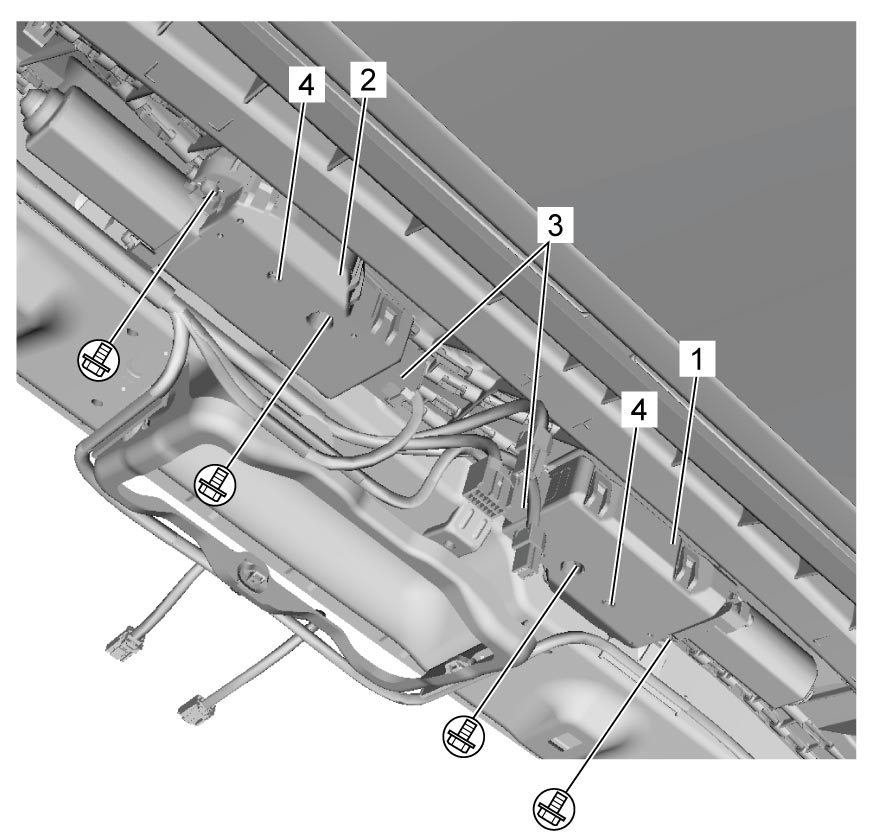

9I
| Sun Roof Motor Removal and Installation |
Removal
1)Remove head lining and spot light. 
2)Disconnect sun roof motor connectors (3) and remove sun roof motor (for sun roof glass) (1) and sun roof motor (for sunshade) (2) removing sun roof motor bolts.


 "Expand image")
| 4. | Sun roof motor hole |
Installation
Reverse removal procedure noting the following points.
•Tighten sun roof motor bolts to specified torque.
•Connect sun roof motor connector to sun roof motor securely.
•Initialize sun roof motors.
•Connect sun roof motor connector to sun roof motor securely.
•Initialize sun roof motors.
During manual operation of the sun roof, the glass and sunshade may move suddenly and can cause personal injury.
Check that ignition is “OFF” or battery negative (–) cable is disconnected when operating the sun roof manually.
NOTE:
Manual rotation of sun roof motor inserting 4 mm hexagon wrench to sun roof motor hole can move sun roof when alignment is necessary (e.g. for correction of misalignment or full closing of half open roof) while ignition is “OFF” or battery negative (–) cable is disconnected.
After this manual operation, initialize sun roof motors.